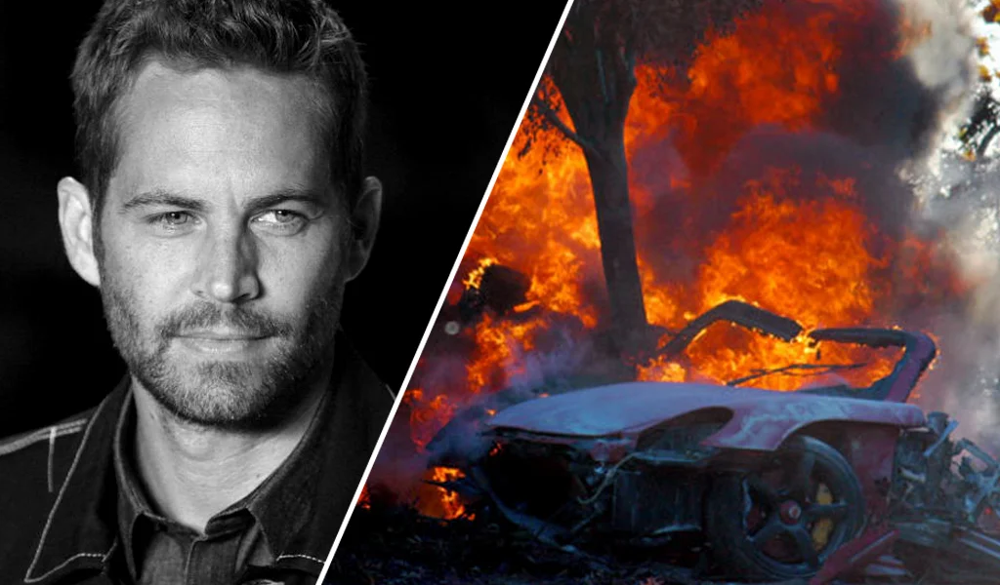

PAUL WALKER
1973 - 2013
"If one day speed kills me, don't cry, because i was smiling." - Paul Walker
Paul Walker(September 12, 1973 - November 30, 2013) was an American actor best known for his role as Brian O'Conner in the Fast & Furious film series. With his passion for cars and dedication to his craft, he captivated audiences around the world. Tragically, Paul Walker's life was cut short in a car accident while attending a charity event for his organization Reach Out Worldwide. Despite his untimely passing, his legacy endures through his work, his charitable endeavors, and the lasting impact he made on the lives of his fans. Rest in peace, Paul Walker. You will always be remembered and missed.